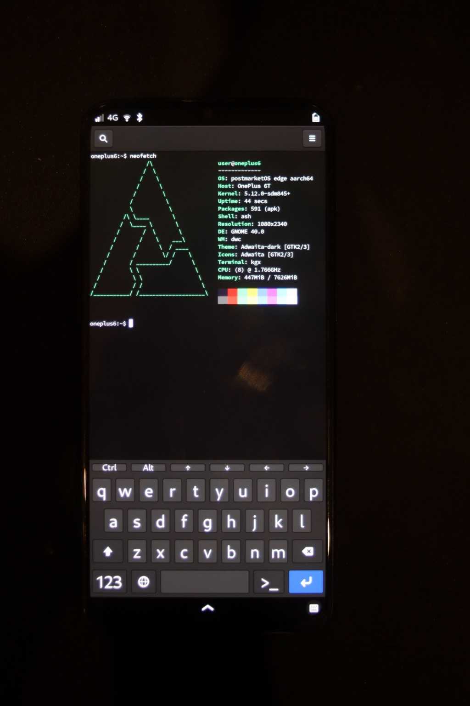

OnePlus 6T (oneplus-fajita)
|
 OnePlus 6T running Phosh | |
| Manufacturer | OnePlus |
|---|---|
| Name | 6T |
| Codename | oneplus-fajita |
| Released | 2018 |
| Category | community |
| Original software | Android |
| Original version | 9 |
| Extended version | 11 on Linux 4.9 |
| postmarketOS kernel | Mainline |
| Hardware | |
| Chipset | Qualcomm Snapdragon 845 (SDM845) |
| CPU | Octa-core (4x 2.8 GHz Kryo 385 Gold & 4x 1.7 GHz Kryo 385 Silver) |
| GPU | Adreno 630 |
| Display | 1080 x 2340 AMOLED |
| Storage | 128 GB / 256 GB |
| Memory | 6 GB / 8 GB / 10 GB (McLaren Edition) |
| Architecture | aarch64 |
| Type | handset |
| Unixbench Whet/Dhry score | 6029.9 |
{kind=link}
| USB Networking |
Works
|
|---|---|
| Flashing |
Works
|
| Touchscreen |
Works
|
| Display |
Works
|
| WiFi |
Works
|
| FDE |
Works
|
| Mainline |
Works
|
| Battery |
Works
|
| 3D Acceleration |
Works
|
| Audio |
Works
|
| Bluetooth |
Works
|
| Camera |
Broken
|
| GPS |
Partial
|
| Mobile data |
Works
|
| SMS |
Works
|
| Calls |
Works
|
| USB OTG |
Broken
|
| NFC |
Broken
|
| Accelerometer |
Broken
|
|---|---|
| Magnetometer | |
| Ambient Light | |
| Proximity | |
| Hall Effect | |
| Barometer | |
| Power Sensor | |
| Camera Flash | |
|---|---|
| Keyboard | |
| Touchpad | |
| USB-A | |
| HDMI/DP | |
| Ir TX |
Unavailable
|
| Ir RX | |
| Stylus | |
| Haptics |
Works
|
| Ethernet | |
| FOSS bootloader | |
|
This device is based on the Snapdragon 845. See the SoC page for common tips, guides and troubleshooting steps |
| THIS PAGE IS SUPPLEMENTARY TO THE ONEPLUS 6 PAGE, REFER TO IT BEFORE ATTEMPTING TO INSTALL POSTMARKETOS |
| NOTE TO WIKI EDITORS! This page should only be used to document OnePlus 6T specific features, for anything which is the same between it and the OnePlus 6 please add information there instead |
This page documents the status of mainline Linux on the OnePlus 6T.
Differences to OnePlus 6
It shares almost all hardware with the OnePlus 6 (non-T), with the following differences:
- no 3.5 mm audio jack
- a slightly different screen resolution.
Special Boot Modes
Fastboot Mode
When you access Fastboot Mode, you can view information about the SoC and whether the bootloader (DEVICE STATE) is locked or unlocked.
While in Fastboot Mode you can use a computer to issue Fastboot commands to flash firmware to the device and manage the current slot that the bootloader is using to boot the operating system.
You can also use Volume Up + Volume Down to select an action from the menu at the top of the screen, and Power to select the action; which include powering off the device, continuing booting to the operating system, and restarting the bootloader which is useful if Fastboot commands are failing.
Enter Fastboot Mode
With the device unplugged and powered off, hold Volume Up + Volume Down + Power. Once you feel the device power on, continue holding Volume Up + Volume Down until you reach Fastboot Mode.
Unlock the bootloader
Before installing postmarketOS you have to unlock your bootloader.
If your device is carrier locked
For the T-mobile version of the device in the US, refer to Google for guides on obtaining an unlock code. Alternatively if you can't get the unlock code, or don't want to wait, you can use MSMDownloadTool to fully reflash device internal storage to old stock international ROM, where fastboot doesn't require unlock codes: this guide from XDA should help. You will need a windows PC, qualcomm usb drivers and use EDL mode.
If your device is not carrier locked
The following is all that's needed to unlock the bootloader:
- Open setting, go to "About" and tap on the "build number" box ~10 times until you get a message saying you are now a developer.
- Go back to the main settings page, go to system and then developer options (it might be hiding behind a drop down). Toggle the switch to "enable OEM unlocking"
- Refer to "how to enter flash mode" above to get into fastboot mode, then re-attach your USB cable. Run the following command on your host:
fastboot oem unlock
- Read the message displayed on your device screen, once you're happy confirm the unlock. THIS WILL ERASE YOUR DEVICE.
EDL Mode
Qualcomm Emergency DownLoad (EDL) Mode is a special low-power boot option that is intended to be used by OEMs to install firmware on presumably new and bricked devices alike.
You can use EDL Mode to enjoy fast offline charging speeds until the kernel gains driver support for fast online charging.
Enter EDL Mode
With the device unplugged and powered off, hold Volume Up + Volume Down while you plug the device in to charge.
Rather than automatically booting as normal, the device will appear to do nothing, after a couple of seconds you can release the buttons.
Exit EDL Mode
Restart the device by holding Power for 10 - 15 seconds (the time seems to vary).
Community Info
postmarketOS users that own the device
- Alexeymin (Notes: For occasional pmOS testing)
- AlphaKaninchen
- CalcProgrammer1
- DrGit (Notes: 128GB)
- Frankwalter (Notes: [8GB/256GB] I bought it to experiment with Linux mobile, so I can help mainlining it and learn about drivers development in the process!)
- GeraltvonNVIDIA (Notes: Daily Driver / LineageOS)
- Hl521 (Notes: postmarketOS)
- Jem (Notes: postmarketOS edge 5.16.5 installed)
- Kalube (Notes: It boots mainline I think)
- Mxkrsv (Notes: Daily driving LineageOS)
- Okias (Notes: 8G/128G)
- Pojntfx
- Realaravinth (Notes: 8GB/128GB)
- Shennuo (Notes: It's running Windows 11, Archlinux and Android 12L)
- Thejsa (Notes: 128GB/8GB variant, currently dual booting an Android 12 ROM and Windows 11)
- WolfLink115 (Notes: Currently using International Firmware. Might install Windows 11 on it again.)
- Zache (Notes: Mobian test device)
Maintainers
See also
Internal pages
External Links